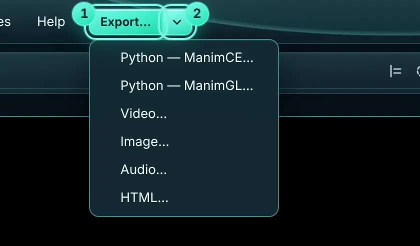
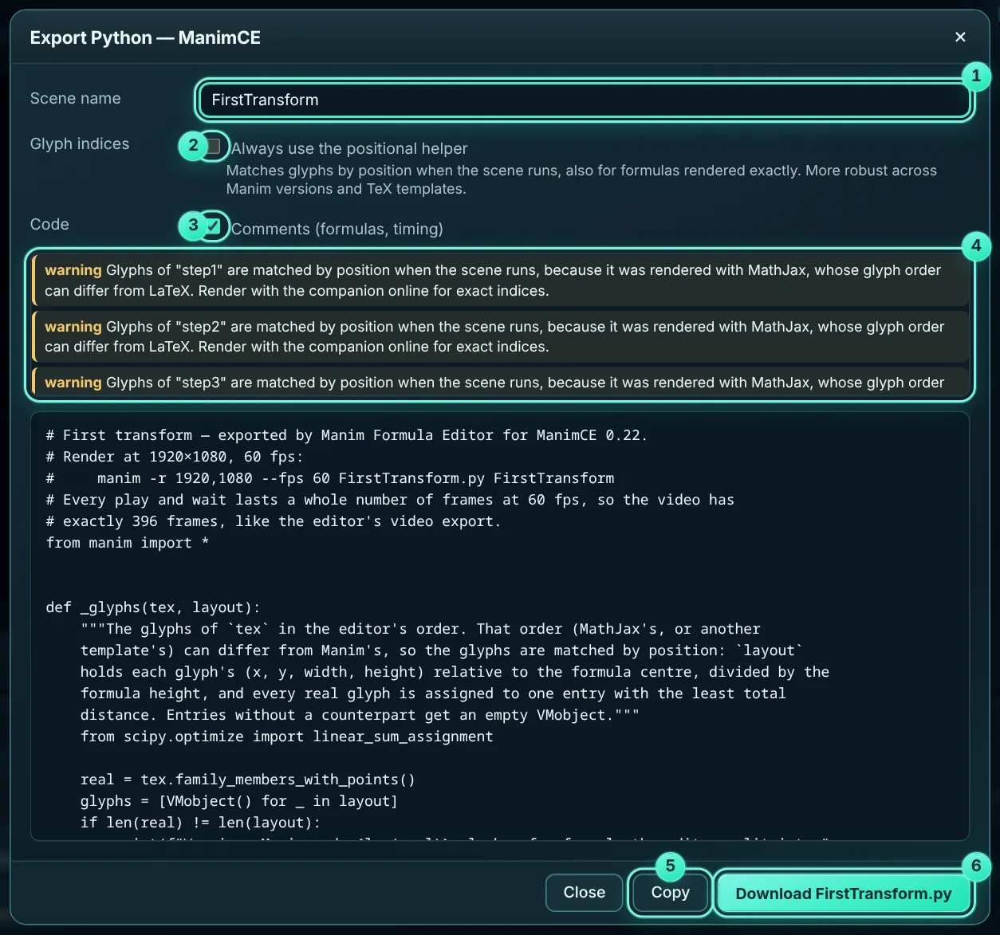
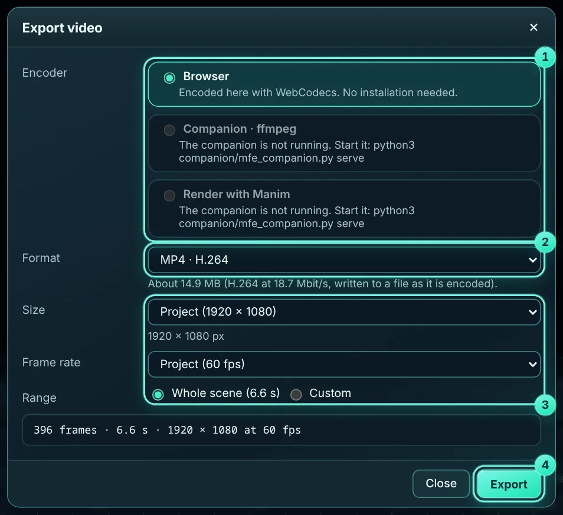
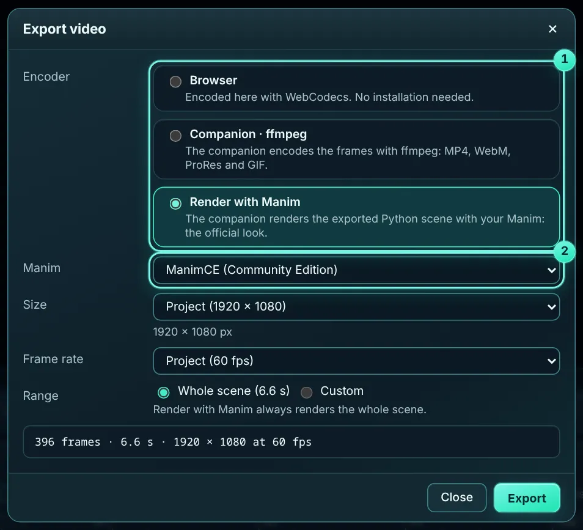
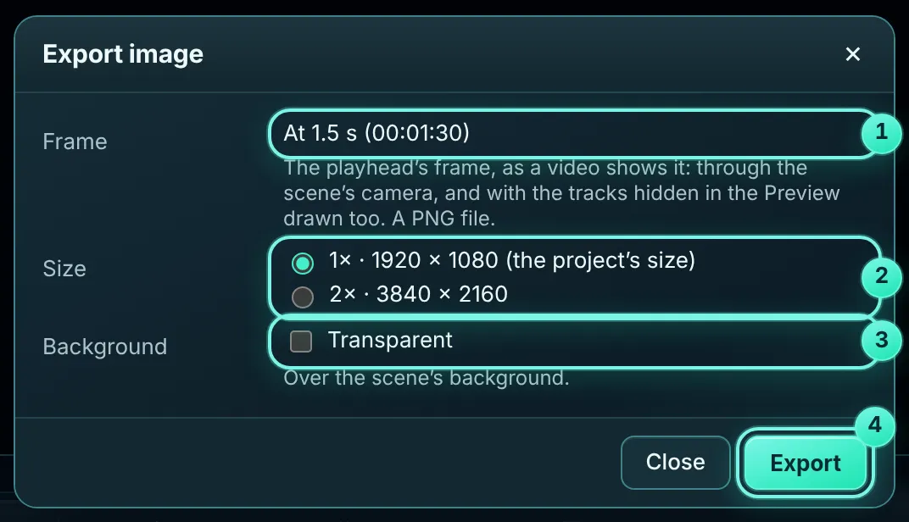
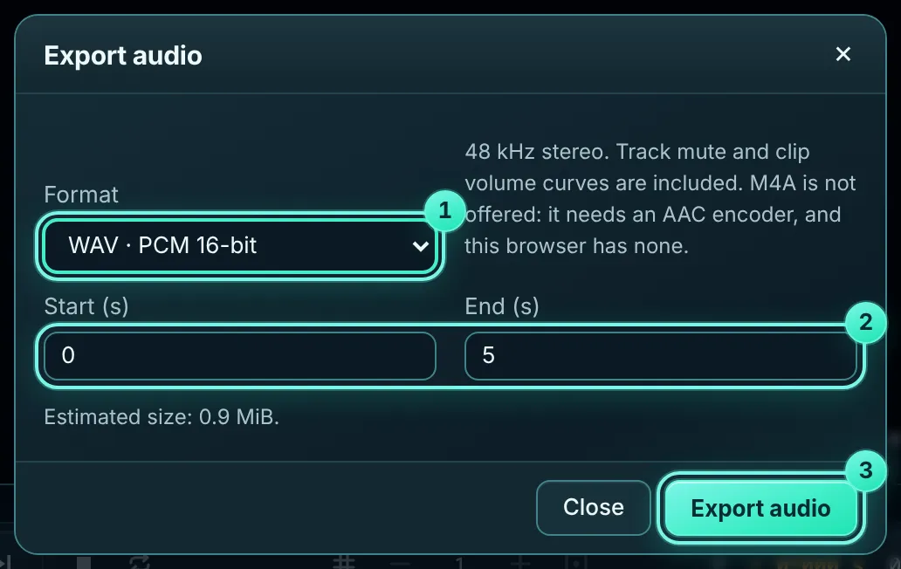

Exporting
Export the scene as ManimCE or ManimGL Python, as a video, as a picture of one frame, as its audio alone, or as a web page that plays it. The Python is the way to Manim: you run it there and get the animation in Manim's own renderer.
What you can export
Everything is in the arrow of the Export… button, next to the menus. Each entry opens a dialog.
| Entry | What you get | What it needs |
|---|---|---|
| Python — ManimCE… | A .py scene for ManimCE | Nothing, to export. Manim, to run it. |
| Python — ManimGL… | A .py scene for ManimGL | Nothing, to export. Manim, to run it. |
| Video… with Browser | An MP4 or a WebM, encoded in the page | Only the browser. |
| Video… with Companion · ffmpeg | An MP4, WebM, MOV (ProRes) or GIF | The companion, with ffmpeg. |
| Video… with Render with Manim | The video Manim renders from the exported scene | The companion, started to allow it, and your Manim. |
| Image… | The frame at the playhead, as a PNG picture | Only the browser. |
| Audio… | The sound of the project: a WAV, a WebM or an M4A | Only the browser. |
| HTML… | A web page that plays the scene live and stops at its pauses: a folder, a zip or one file | Only the browser. |
Which one do you need?
- You want the scene as Manim code, to render with Manim or to change by hand: Python.
- You want a video now, and have no Manim: Video with Browser.
- You want a GIF, a ProRes file, or an H.264 file without the specks the browser's encoder can leave: Video with Companion · ffmpeg.
- You want the video Manim itself draws, without leaving the editor: Video with Render with Manim.
- You want one moment of the scene as a still picture: Image.
- You want the sound alone: Audio.
- You want to present the scene in a talk that stops where you say, put it in a web page of your own, or go on with it in code: HTML (Slides and the HTML page).
The Export… button
The Export… button is the mint button to the right of the menus: the bar has no Export menu. Pressing it opens the dialog of the last Python target you used, ManimCE at first. Its arrow lists the six exports, and this documentation writes an entry of that list as Export ▸ Video….

Python for ManimCE and ManimGL
Choose Export ▸ Python — ManimCE… or Export ▸ Python — ManimGL…. The dialog writes the scene as you watch, and changes it as you change its options. Nothing is saved until you press Download <scene name>.py or Copy.

- Scene name: the name of the Python class and of the file. It starts as the
name of the project, written as a Python name (First transform becomes
FirstTransform). Type another name in the field, or rename the project in the menu bar. - Always use the positional helper: finds every glyph by its position when the scene runs, also for formulas the companion rendered exactly. Without it the file uses the exact index of each glyph where it has one.
- Comments (formulas, timing): the comments that name each formula and each step with its times. Untick it for a bare file.
- The notes. They list what the scene cannot guarantee. For a formula the browser typeset with MathJax they say that its glyphs are found by position when the scene runs, because MathJax and LaTeX can order glyphs differently; the scene still plays as the Preview does. With nothing to say, the dialog reads The scene reproduces the preview: exact glyph indices, whole frames., or, with the positional helper ticked, The scene reproduces the preview: glyphs matched by position when it runs, whole frames.
- Copy puts the code on the clipboard.
- Download <scene name>.py saves the file under that name:
FirstTransform.pyhere.
The code is one MathTex (ManimCE) or Tex (ManimGL) per clip, and then plain
self.play(…) and self.wait(…) calls, one for each step of the timeline, each in
a whole number of frames. This is the file for First
transform, in both versions:
The first lines of the file are comments that tell you how to render it. Export the version for the Manim you have installed. The two differ in small ways, which ManimCE and ManimGL lists. The editor writes for ManimCE 0.22 and ManimGL 1.7.
Running the Python
You need Manim installed, as its own documentation says: ManimCE (the Community Edition) or ManimGL (the version of 3Blue1Brown). Put the downloaded file in a folder, open a terminal there, and run the command written in the first lines of the file. For a project named First transform they are these.
ManimCE:
manim -r 1920,1080 --fps 60 FirstTransform.py FirstTransformManimGL:
manimgl FirstTransform.py FirstTransform -w -r 1920x1080 --fps 60The command gives Manim the file, the name of the scene to render, and the size and frame rate of
your project (set in File ▸ Project settings…). The video lasts exactly as long as
the timeline, because every step is a whole number of frames. ManimGL needs -w to write a
movie file; without it, it opens its window instead.
- ManimCE writes the video under
media/videos/, in a folder named after the file and one named after the size and frame rate (1080p60here). Add-pto play it when it is done. For a quick render, leave out-rand--fps, which would override the quality flag, and use-ql:manim -ql -p FirstTransform.py FirstTransformrenders at 854×480 and 15 frames a second. - ManimGL writes
FirstTransform.mp4to its output folder,videosby default. Add-oto open the file when it is done. For a quick render, leave out-rand--fpsand use-l:manimgl FirstTransform.py FirstTransform -w -l -orenders at 480p. - If the shell does not find
manim,python -m manim, with the Python that has Manim installed, does the same.
This is what ManimCE makes of the file above, rendered with -ql:
Why the exported scene has a helper at its top, how close it is to the Preview, and how to change it by hand are on The generated Python.
Video
Export ▸ Video… makes a video file of the scene, without Manim. You choose how it is encoded, and its size, its frame rate and the part of the scene it covers.

- Encoder. Each choice says what it does. Browser: Encoded here with WebCodecs. No installation needed. Companion · ffmpeg: The companion encodes the frames with ffmpeg: MP4, WebM, ProRes and GIF. Render with Manim: The companion renders the exported Python scene with your Manim: the official look. The last two need the companion, a small program you run on your computer; without it they are greyed out, and each says what is missing (The companion).
- Format. For the browser: MP4 · H.264, MP4 · AV1 or WebM · VP9, those of them that the browser can encode. With ffmpeg: MP4 · H.264, WebM · VP9, MOV · ProRes 422 HQ or GIF, and a Quality from Low (small file) to High (large file) for the first two. With Manim there is no format: Manim chooses ManimCE (Community Edition) or ManimGL (3b1b), and the scene is converted when the project targets the other one. For the browser, the dialog estimates how large the file will be.
- Size, Frame rate and Range: the project's own, or others. Render with Manim always renders the whole scene, and the dialog says so under Range. The line under them says how many frames the video has, how long it is and at what size.
- Export starts it. A bar shows how far it is, and Cancel export stops it.

The file is named after the project (First transform.mp4), and the video lasts exactly the
frames of the range divided by the frame rate. In Chrome and Edge the dialog asks where to save
the file and writes it as it encodes; in other browsers it assembles the file in memory and
downloads it at the end.
Exporting video goes through the three encoders, their formats and
their limits.
An image
Export ▸ Image… writes the frame the playhead is at as a PNG picture. It is the frame a video shows at that instant: through the scene's camera when it has one, and with the tracks you hid in the Preview drawn too, since only the Preview hides them (the buttons of a track).

- Frame: the instant it draws, in seconds and as minutes, seconds and frames. Opening the dialog stops the playback, so that this instant is the one of the picture: put the playhead where you want it first.
- Size: 1× is the project's size; 2× is twice it each way. The scene is curves, so the larger picture is sharper, not stretched.
- Transparent leaves the scene's background out: what is drawn, over nothing, to lay over another picture.
- Export draws it. It waits while a formula is rendering. As the video dialog does, the dialog tells of the formulas on screen at that instant that it cannot draw as they are written: one whose LaTeX fails is drawn as its last good render, or left out when it never had one; a font text nothing has shaped is drawn as its placeholder boxes; one with nothing to draw it holds the picture back.
The file is named after the project and the instant (First transform 1.50s.png), so
the pictures of several frames have each their name. In Chrome and Edge the dialog
asks where to save it; in other browsers it is downloaded, and Download again
downloads it once more. The dialog then says what it saved, with the size of the picture in pixels and
of the file. The picture is the one of the click on Export, whatever changes
while the browser asks where it goes.
The dialog opens with the size and the background you left it at, while the page is open: for several transparent frames you tick Transparent once. A page loaded again starts from 1×, with the background.
Audio
Export ▸ Audio… writes the sound of the project alone: the recordings of the timeline with the volume curves and the muted tracks applied, mixed to stereo at 48 kHz. It does not draw any formula.

Choose WAV · PCM 16-bit or WebM · Opus, and a start and an end in
seconds. M4A · AAC is offered where the browser can encode AAC. The file is named
after the project (First transform.wav). A project without recordings still exports: the file
is silent. To put the sound in a video, tick Include audio · volume curves and track mute in the
video dialog, which appears when the project has recordings
(Audio). The exported Python has no sound: when the project has
recordings, the Python dialog says Audio is omitted from Manim exports.
A web page
Export ▸ HTML… writes the scene as a web page that is the animation itself: the editor's own engine draws it as it plays, sharp at any size, and it opens from disk without a server. It stops at each pause of the Slides mode until its reader goes on, so that you can present the scene in a talk; it can be embedded in a page of your own, and its folder is written for a coding agent to extend. Slides and the HTML page covers it, from the pauses to the agent.
Where to go next
- The generated Python and ManimCE and ManimGL explain the scene file.
- Exporting video covers the encoders and the companion.
- Slides and the HTML page covers the web page: pauses, presenting, embedding it, and handing it to a coding agent.
- Your first animation ends with an export, step by step.